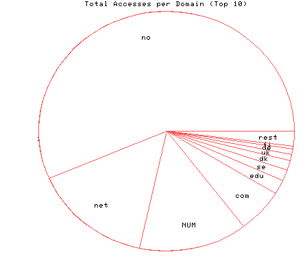
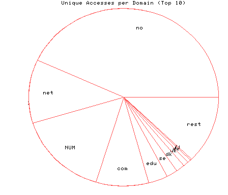

HTTP Server Domain Statistics
Covers: 09/27/95 to 03/11/96 (167 days).
All dates are in local time.
1 level, sorted by number of requests, 30 unique domains.
6470 : 708 : 03/11/96 : Norway (.no) 1735 : 188 : 03/10/96 : Network (.net) 1579 : 256 : 03/08/96 : (numerical domains) 685 : 147 : 03/09/96 : US Commercial (.com) 218 : 54 : 03/08/96 : US Educational (.edu) 166 : 32 : 03/10/96 : Sweden (.se) 154 : 24 : 03/10/96 : Denmark (.dk) 96 : 15 : 03/01/96 : United Kingdom (.uk) 84 : 10 : 03/05/96 : Germany (.de) 45 : 3 : 02/28/96 : Finland (.fi) 31 : 9 : 02/28/96 : Canada (.ca) 24 : 6 : 01/16/96 : Australia (.au) 17 : 2 : 01/06/96 : New Zealand (.nz) 16 : 4 : 03/01/96 : France (.fr) 14 : 4 : 01/17/96 : Non-Profit (.org) 13 : 2 : 12/19/95 : Japan (.jp) 11 : 2 : 02/09/96 : Iceland (.is) 11 : 2 : 01/25/96 : US Government (.gov) 11 : 2 : 01/22/96 : Switzerland (.ch) 9 : 2 : 02/15/96 : South Korea (.kr) 6 : 1 : 02/25/96 : Spain (.es) 6 : 2 : 02/20/96 : United States (.us) 6 : 1 : 02/08/96 : Belgium (.be) 6 : 1 : 01/05/96 : Brazil (.br) 4 : 1 : 02/16/96 : Netherlands (.nl) 4 : 148 : 01/07/96 : Colombia (.co) 3 : 1 : 02/26/96 : Russian Federation (.ru) 3 : 1 : 02/23/96 : Indonesia (.id) 3 : 1 : 02/22/96 : Italy (.it) 2 : 1 : 02/23/96 : US Military (.mil)

Statistics generated at Mon Mar 11 03:12:26 MET 1996, (C) Schibsted Nett AS, 1995.